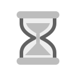

FRICTION TIMER / VISUAL IDENTITY
A little time.
A deliberate choice.
An emoji-like hourglass with warm gold sand, cream glass, and sturdy rounded caps. Simple geometry holds its shape at small sizes; the falling sand makes the pause visible.
The mark
Application
Charcoal tile · full color
Transparent
Headers and illustrations
Single ink
Print and neutral contexts
Reversed
Dark backgrounds

GrayscaleColor-free reproduction
Monospace wordmark
JetBrains Mono Bold. Use the supplied PNG for identical typography everywhere. SVG wordmarks retain editable text and need JetBrains Mono installed for an exact match.
Small by design
Palette
Gold #FABD2FCream #EBDBB2Charcoal #282828Frame #504945
Use the kit
SVG masters plus transparent PNGs at 16, 24, 32, 48, 64, 128, 256, 512, and 1024 pixels. Keep clear space of at least one cap height. Preserve proportions; use the reversed mark on dark backgrounds and the dark mark on light backgrounds.
Android gets separate adaptive foreground, background, and monochrome layers. Desktop and iOS exports live in src-tauri/icons. See asset and regeneration notes.